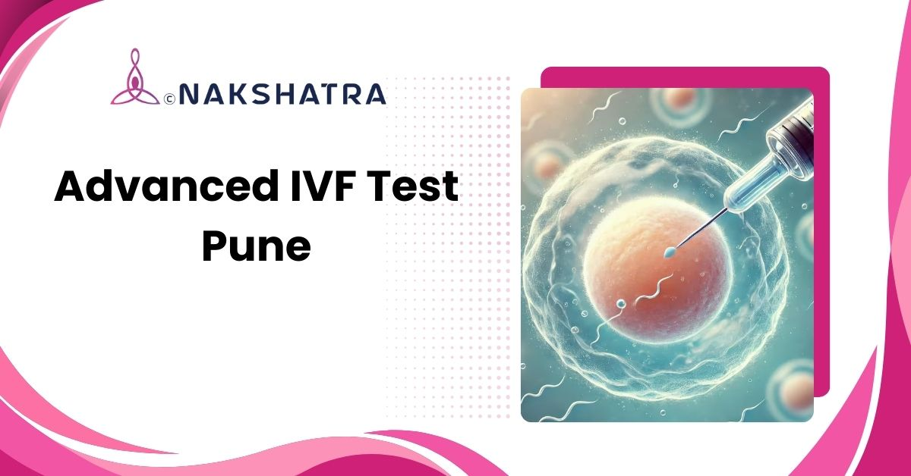

Clearer fertility picture
Testing reviews ovarian reserve, sperm health, uterine environment, hormones, and genetics.
Advanced IVF tests in Baner, Pune including ERA, genetic screening, follicular study, and complete male & female fertility evaluation for better outcomes.

Testing reviews ovarian reserve, sperm health, uterine environment, hormones, and genetics.
The original pathway focuses on what moves the needle, not unnecessary tests.
Consultation-focused testing support at Nakshatra Clinic.

Good testing builds great treatment plans. Our advanced IVF test panel gives a clear picture of ovarian reserve, sperm health, uterine environment, hormones, and genetics, so your plan is precise, not guesswork.
The original page separates female and male evaluation so the test plan can be targeted and clinically useful.
A step-by-step diagnostic workflow helps connect reports with treatment decisions.
We review history, prior reports, and set a targeted testing plan, no unnecessary tests, only what moves the needle.
Bloods for AMH & hormones, ultrasound-AFC, and uterine evaluation (SIS/HSG) as indicated.
Advanced semen analysis with DFI where required; targeted hormonal and genetic panels if red flags appear.
We stitch the data together, reserve, embryo potential, uterine readiness, and sperm quality, to map the shortest path to pregnancy.
Supplements, timing, stimulation protocol, ICSI/PGT decisions, and add-ons chosen because your numbers say they will help.
Testing is not about doing more, it is about finding what matters for you. Our diagnostics are focused, evidence-based, and designed to support treatment planning.
Accurate testing helps pick the right stimulation, decide IVF vs ICSI, choose embryo day and number, and time transfer.
Book a consultation for Advanced IVF Tests in Baner, Pune and discuss which diagnostic workup is relevant for your fertility journey.